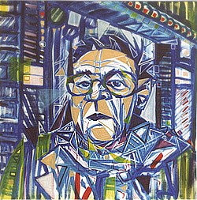

|  |  |  |  |  |
|
 click here to view larger image |
 |
When I Painted Over the Beginning of Hidde van Schie's Painting oil paint, cotton canvas 80 x 80 cm 2001 collection E.R.M. van't Zelfde My friend Hidde and I wanted to make a painting together. At that time, Hidde was making distinct portraits of men. One day he came into our atelier with a canvas on which he had already done the underpainting or sketch for a new work. |
|
His underpainting had all of these holes in it and I asked him if I could paint 'pieces' over the holes. He agreed.
So everything that's blue in this painting was the first layer done by Hidde. All of the other colors on top were painted by me. |